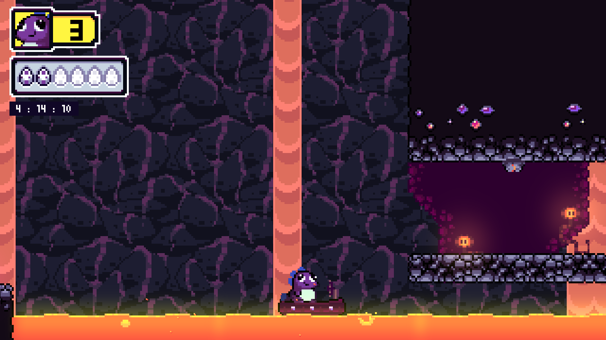
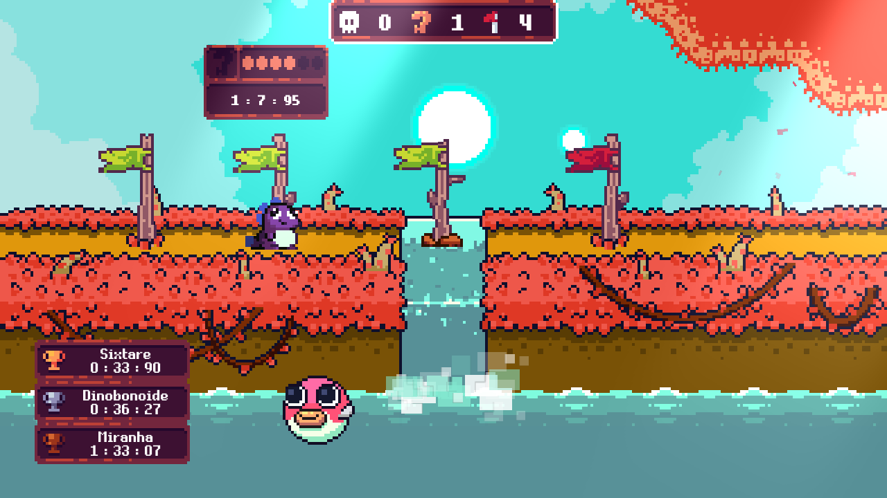
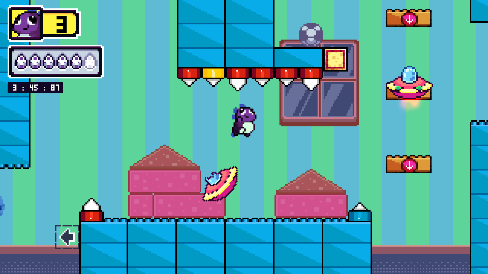

<!DOCTYPE html><html lang="pt-BR"><head><meta charset="UTF-8"/><meta name="viewport" content="width=device-width, initial-scale=1.0"/><title>Dininho Adventures</title><link rel="stylesheet" href="https://necolas.github.io/normalize.css/8.0.1/normalize.css"/><link rel="stylesheet" href="https://fonts.googleapis.com/css2?family=Bungee&amp;family=Nunito&amp;display=swap"/><!-- Required Core Stylesheet--><link rel="stylesheet" href="https://cdnjs.cloudflare.com/ajax/libs/Glide.js/3.4.1/css/glide.core.min.css"/><!-- Optional Theme Stylesheet--><link rel="stylesheet" href="https://cdnjs.cloudflare.com/ajax/libs/Glide.js/3.4.1/css/glide.theme.min.css"/><link rel="stylesheet" href="style.css"/></head><body></body></html><header class="game" id="game-screen"><div class="game-logo is-light"></div><div class="game-ground" style="background-image: url('./images/game_floor.png'); width: 100%; height: 164px"></div></header><div class="page-wrapper"><section class="section introduction"><h1 class="title is-main">Ajude Dininho, nesta que pode...</h1><p>...ser a aventura mais heroica de sua vida! Só mesmo alguém muito
maligno poderia ter a frieza de roubar os ovos de uma mamãe dinossauro
indefesa e Dininho não pode deixar isso assim. Explore este mundo
colorido e perigoso, resgatando todos os bebês indefesos. Mas cuidado,
"Ele" estará te esperando ao final de cada estrada. Eu confio em você!
Vá e seja o herói da Dinolândia.
</p></section><div class="separator"></div><section class="section screenshots"><div class="screenshots-slider glide"><div class="glide__track" data-glide-el="track"><div class="glide__slides"><video class="glide__slide" controls="true"><source src="./images/screenshots/video.mp4"/></video></div></div></div><a class="button is-wood">Jogar</a></section><div class="separator"></div><section class="section features"><h1 class="title is-main">jogo tem</h1><ul><li>Controle de Dininho nessa clássica aventura em plataformas, superando os obstáculos para entregar os ovos ao ninho.</li><li>Campanha principal com 4 mundos distintos com suas próprias características e desafios.</li><li>Mundo especial desbloqueável para os melhores exploradores.</li><li>Temporizador dentro do jogo (Speedrunners <3).</li><li>Ranking de melhores tempos em cada fase entre seus amigos da Steam!</li></ul></section><div class="separator"></div><section class="section requirements"><h1 class="title is-main">Requisitos</h1><dl class="requirement-list"><div><dt>SO: </dt><dd>Windows 7, 8/8.1, 10</dd></div><div><dt>Processador:</dt><dd>2.0 Ghz</dd></div><div><dt>Memória:</dt><dd>2.5 GB de RAM</dd></div><div><dt>Placa de vídeo:</dt><dd>128mb Video Memory</dd></div><div><dt>DirectX:</dt><dd>Versão 9.0</dd></div><div><dt>Armazenamento:</dt><dd>400 MB de espaço disponível</dd></div></dl></section><div class="separator"></div><div class="copyright">Dininho Adventures Copyright @ 2020 - 2020</div><div class="social"></div></div><script src="https://cdnjs.cloudflare.com/ajax/libs/Glide.js/3.4.1/glide.js"></script><script>new Glide('.glide', {
  type: "carousel",
  gap: 10,
}).mount()</script>